A common issue with real-word datasets is handling of categorical predictors with many unique factor levels.1 This problem is especially acute in the e-commerce, retail, and banking sectors, where predictors such as item type, zip code, or user city may wield hundreds or even thousands of unique levels. In fact, most datasets containing textual features will exhibit these issues and therefore data analysts should be well-equipped with strategies for making the most of these categorical predictors. The following list represents some of the most frequently-encountered issues when preparing such datasets for predictive modeling (taken from Mount and Zumel (2018)2):
Missing (NA) or invalid categorical level values
Novel levels encountered in model validation/testing sets
Extremely rare or infrequent categorical levels
Some learning methods in R, for example, can only handle categorical predictors with a maximum of 63 unique levels
Creation of large numbers of dummy variables unnecessarily adds dimensions to the model input, slows down model training, and reduces model interpretability
This post is an attempt to empirically evaluate several different pre-processing strategies specifically tailored to datasets containing categorical predictors with a substantial number of unique levels. Each strategy brings with it several benefits but also several drawbacks; therefore, the question of which technique is best suited for a particular dataset is left open to experimentation and will depend on the details surrounding the predictive modeling task. For example, some stakeholders may value model interpretability more than the speed at which the model can be deployed or trained. These factors will need to be taken into consideration when deciding which methods to use.
Our goal is to compare the predictive performance of four methods of dealing with datasets that include high-cardinality categorical variables. We don’t care so much about the absolute performance of our predictive model; rather we care about the relative improvement gained by using these various techniques.
To explore these strategies we’ll look at how each method performs on a sample Kickstarter dataset from Kaggle. Can we use the textual features of the campaign title to predict the final number of campaign backers? Although this is not our main goal, we’re also interested in answering whether the text features contain any predictive signal we can use.
Kickstarter might want to use this information in order to advise new projects on which kinds of words tend to attract the most backers, or they could use such predictions to position some projects in visible areas on the main page in order to attract even more viewers (relying on a kind of ‘network effect’). Finally, by combining the estimated number of backers with an average pledge amount, Kickstarter could also generate a probability that a campaign will reach its funding goal.
Here’s an example of Kickstarter’s website to illustrate what we are trying to predict and where the text features come from.
When structured, the dataset looks something like this (target variable highlighted in red): 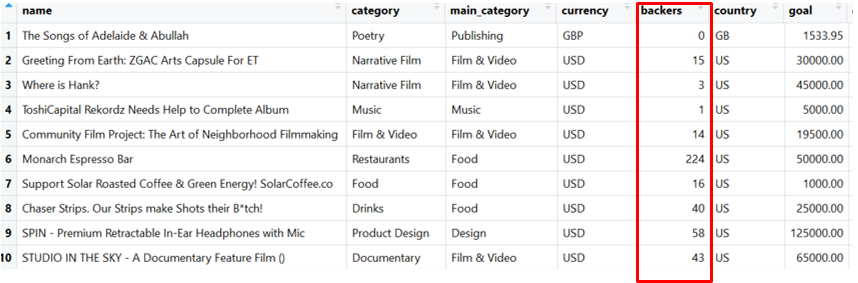
Strategy 1: Naive approach: Collapsing into top N categories
Strategy 2: Impact coding
Strategy 3: String distance and clustering
Strategy 4: Feature hashing
In order to make our comparison of strategies as fair as possible, we will need to set up some base conditions when comparing the different approaches. The final dimensions of the training sets used during model estimation will differ, however, depending on the technique used. For example, in our feature hashed version, we will have over 500,000 predictors. All trained models will have the following in common:
library(caret)
library(xgboost)
library(tidyverse)
library(stringdist)
library(ModelMetrics)
library(text2vec)
library(xray)
df <- read.csv('kick_sample.csv', stringsAsFactors = F)
glimpse(df)
## Observations: 50,000
## Variables: 15
## $ name <chr> "3 great ways to have a big income with no form...
## $ category <chr> "Academic", "Music", "Animals", "Photography", "...
## $ main_category <chr> "Publishing", "Music", "Photography", "Photograp...
## $ currency <chr> "USD", "GBP", "USD", "USD", "EUR", "USD", "USD",...
## $ backers <int> 0, 51, 136, 0, 3, 30, 0, 6, 232, 2, 170, 104, 1,...
## $ country <chr> "US", "GB", "US", "US", "DE", "US", "US", "US", ...
## $ goal <dbl> 5000.00, 7855.97, 2200.00, 5000.00, 29296.76, 20...
## $ dow_deadline <chr> "Sun", "Wed", "Sun", "Fri", "Sun", "Sat", "Mon",...
## $ yr_deadline <int> 2015, 2017, 2014, 2014, 2016, 2012, 2017, 2017, ...
## $ mo_deadline <int> 7, 10, 11, 8, 9, 6, 4, 6, 5, 9, 11, 10, 7, 3, 10...
## $ word_count <int> 11, 1, 2, 6, 7, 7, 3, 5, 10, 8, 8, 5, 10, 1, 6, ...
## $ ave_sentiment <dbl> 0.22613350, 0.00000000, 0.00000000, 0.00000000, ...
## $ total_chars <int> 59, 8, 22, 28, 40, 57, 31, 31, 57, 49, 44, 33, 6...
## $ exc_count <int> 0, 0, 0, 0, 0, 0, 0, 0, 0, 0, 0, 0, 0, 0, 0, 0, ...
## $ extreme <dbl> 0, 0, 0, 0, 0, 0, 0, 0, 0, 0, 0, 0, 0, 0, 0, 0, ...
This dataset is typical for one you might see on Kaggle or obtain from webscraping. There are tons of categories. What should we do?
x <- xray::anomalies(df)
x$variables%>%
filter(type== 'Character')%>%
select(Variable, qDistinct)
## Variable qDistinct
## 1 dow_deadline 7
## 2 currency 14
## 3 main_category 15
## 4 country 23
## 5 category 159
## 6 name 49943
There are over 159 unique levels in the “category” column alone.
num_v <-x$variables%>%
filter(type== 'Character')%>%
select(Variable, qDistinct)%>%
filter(Variable != 'name')%>%
pull(qDistinct)%>%
sum()
cat('There are', num_v, 'unique factor levels not including the unique campaign names')
## There are 218 unique factor levels not including the unique campaign names
#plot counts of factor levels for category
df%>%
count(category, sort=T)%>%
ggplot(aes(reorder(category, n),n))+
geom_col()+
coord_flip()+
theme_minimal()+
theme(axis.text.y = element_text(size=2))+
labs(x='Unique categories', y='Times appears in dataset')
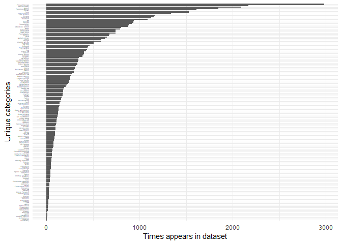
What is the minimum number of unique levels needed to account for roughly 80% of all observed levels? Generally, we’ll find that this tends to follow Pareto’s 80/20 law. In this case we find it’s more like 80/31. In other words, 31% of unique category levels account for 80% of all observed categories.
df%>%
dplyr::count(category, sort=T)%>%
mutate(total = sum(n),
perc = n/total,
cum_perc = cumsum(perc),
nums = 1:n_distinct(category))%>%
ggplot(aes(cum_perc, nums))+
geom_line()+
geom_vline(xintercept = .80, linetype='dashed')+
labs(x='Cumulative Percentage',y='Number of unique factor levels', title='How many unique levels capture 80% of all observed levels?')+
theme_minimal()
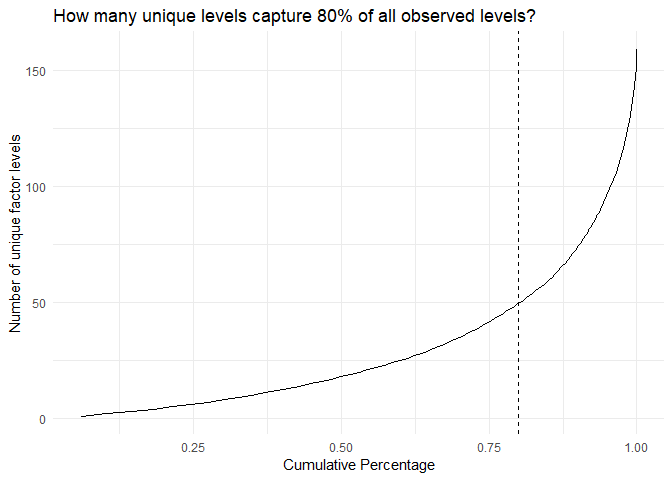
Before we get into the pre-processing, let’s quickly look at the distribution of the target variable.
We see a highly skewed outcome variable with lots of campaigns getting 0 or nearly 0 backers, but some getting up to nearly 92,000 followers. This may explain why regression techniques do not seem to perform well on this dataset.
theme_set(theme_minimal())
ggplot(df, aes(backers))+
geom_histogram()+
scale_x_log10()
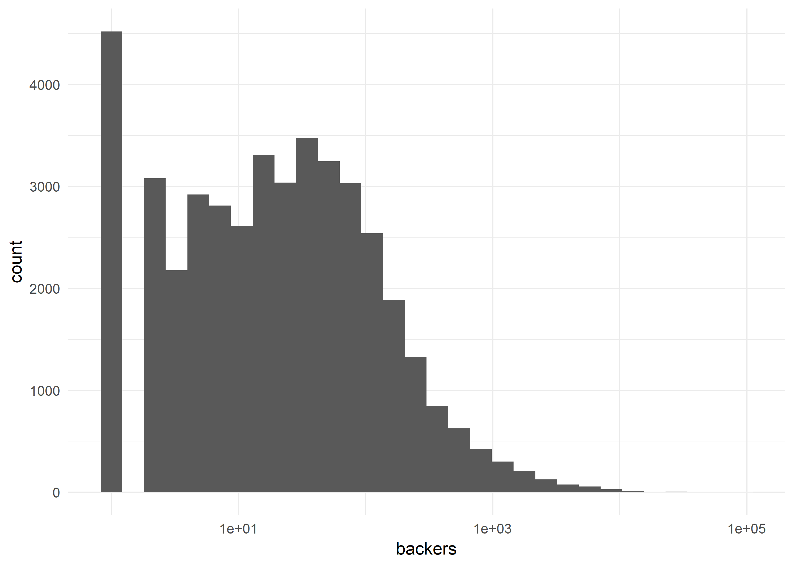
The existence of so many viral outlier campaigns makes it hard to even visualize. So let’s focus just on the more successful campaigns that attracted more than 5000 backers. We can see some campaigns managed to get over 25,000 backers, but the vast majority are near 0.
df%>%
filter(backers > 5000)%>%
ggplot(aes(backers))+
geom_histogram()
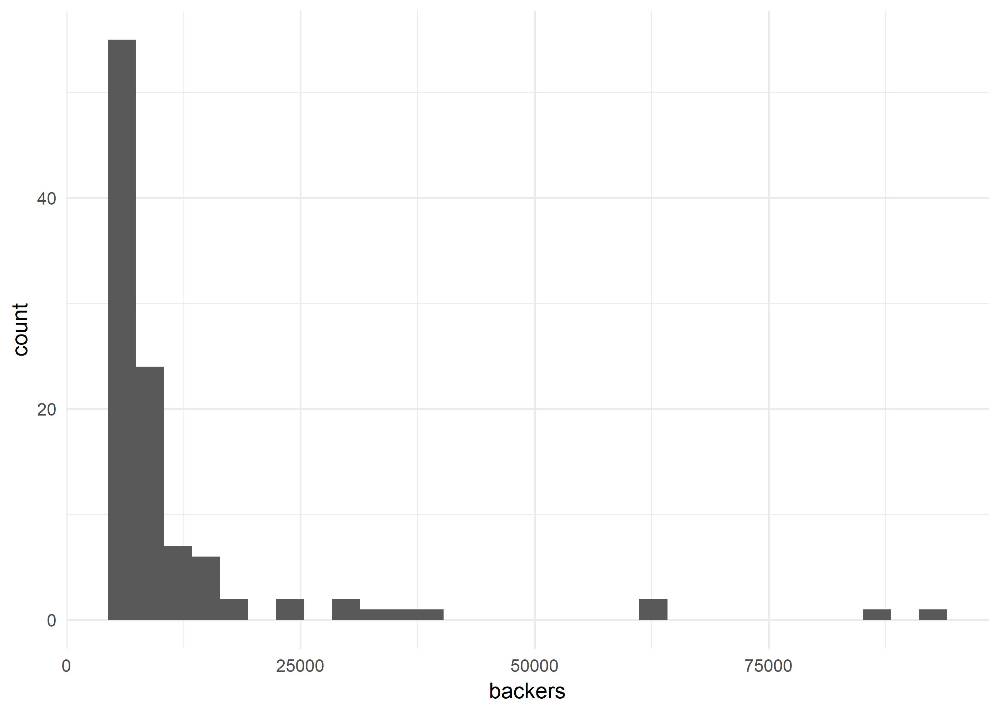
Let’s look at more summary stats of the outcome variable. We can see a huge discrepancy between the mean and median values and so it’s not surprising the skew is large. The very large kurtosis statistic tells us about the presence of outliers in the tails of our distribution. Clearly this outcome variable is not following a normal distribution. Without any transformations of the outcome variable, we can already imagine that regression-based approaches may have some problems.
library(psych)
psych::describe(df%>%select(backers, goal))
## vars n mean sd median trimmed mad min
## backers 1 50000 105.68 907.92 12.00 28.72 17.79 0.00
## goal 2 50000 41446.59 1020747.46 5375.01 9366.08 6747.69 0.15
## max range skew kurtosis se
## backers 91585 91585 59.93 4957.11 4.06
## goal 100000000 100000000 80.53 7174.86 4564.92
What kind of results do you get if you simply try to make a basic model using tf-idf weights for the features? Before evaluating the performance impact of the other methods, a “control” condition of no special pre-processing was made in order to provide a benchmark.
Note here we need to make sure we are splitting the data in the same way for each technique. We will keep 80% of the observations to train our models and compare performance on the remaining 20%.
#BREAKUP INTO TRAINING AND TESTING
set.seed(1)
sp <- createDataPartition(df$backers, p=.8, list=FALSE)
train <- df[sp,]
test <- df[-sp,]
Just to verify the splitting procedure, let’s visualize the two outcome distributions in training and testing sets. They appear roughly the same. This is because, by default, caret uses a stratified sampling procedure to create training and testing sets.
f <- bind_rows(train, test, .id='set')
ggplot(f,aes(backers, fill=set))+
geom_histogram(binwidth=100)+
coord_cartesian(xlim=c(0,2000))+
facet_wrap(~set)+
theme_minimal()
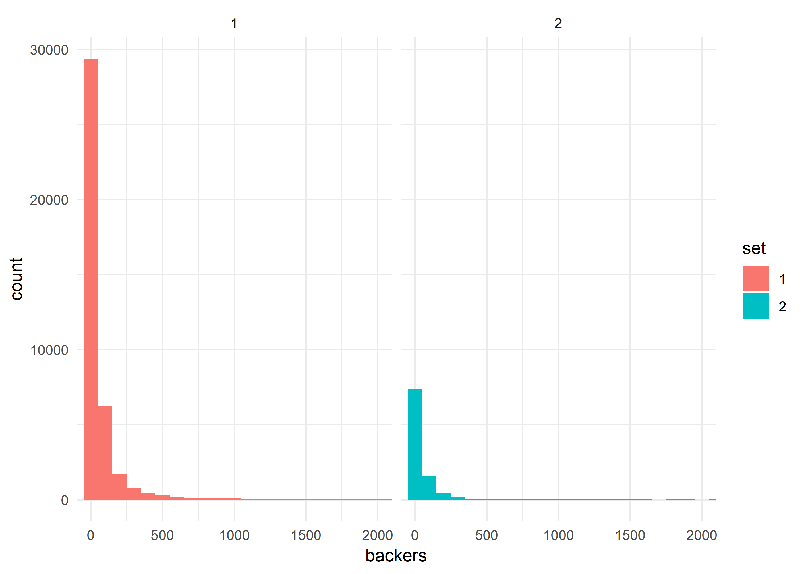
One key issue here is to make sure you are not mixing information from your test set into your training set (i.e., information leakage). In order to prevent this we need to apply separate TF-IDF weights for train and test sets. Often times in Kaggle you will see people apply tf-idf weighting to the full dataset and then afterwards split back into training and testing. If done this way, your performance estimates will likely be overly optimistic on new data.
prep_fun = function(x) {
x %>%
# make text lower case
str_to_lower %>%
# remove non-alphanumeric symbols
str_replace_all("[^[:alpha:]]", " ") %>%
# collapse multiple spaces
str_replace_all("\\s+", " ")
}
#prep_fun = tolower
tok_fun = word_tokenizer
#try to fix foreign characters
df$name <- iconv(df$name, 'Latin-9')
#create training iterator
it_train = itoken(train$name,
preprocessor = prep_fun,
tokenizer = tok_fun,
progressbar = TRUE)
stop_words = c(tm::stopwords('en'),"i", "me", "my", "myself",
"we", "our", "ours", "ourselves", "you", "your", "yours",
'a', 'the', 'for', 'of', 'and', 'in', 'to', 'act', 's')
#we'll use up to trigrams here
vocab = create_vocabulary(it_train, ngram = c(1, 3), stopwords = stop_words)
#we keep 500 words max. this is already pushing memory limits of R
#if you want to use dataframes as your data type
pruned_vocab = prune_vocabulary(vocab,
term_count_min = 10,
vocab_term_max = 500)
#keep <- which(nchar(pruned_vocab$term) > 1)
#pruned_vocab <- pruned_vocab[keep,]
vectorizer = vocab_vectorizer(pruned_vocab)
#create training dtm
dtm_train = create_dtm(it_train, vectorizer)
Here’s what our text features will look like. Notice the foreign characters that weren’t quite converted right. They may act as indicators of foreign Kickstarter campaigns, which may prove useful when making predictions.
head(pruned_vocab)
## Number of docs: 40001
## 194 stopwords: i, me, my, myself, we, our ...
## ngram_min = 1; ngram_max = 3
## Vocabulary:
## term term_count doc_count
## 1: new 1510 1490
## 2: album 1442 1439
## 3: u 1350 1108
## 4: fffd 1269 1028
## 5: u_fffd 1269 1028
## 6: film 1251 1241
We do the same thing with the test set, but at the end we apply the fit_transform object built from the training set onto the test set. This safeguards against information leakage. If we were lazy or wanted to do slightly better in a Kaggle contest, we wouldn’t need this step–we would just use the same tf-idf weightings for both train and test.
#Now rinse and repeat for the test set
it_test = itoken(test$name,
preprocessor = prep_fun,
tokenizer = tok_fun,
progressbar = TRUE)
stop_words = c(tm::stopwords('en'),"i", "me", "my", "myself",
"we", "our", "ours", "ourselves", "you", "your", "yours",
'a', 'the', 'for', 'of', 'and', 'in', 'to', 'act', 's')
vocab = create_vocabulary(it_test, ngram = c(1, 3), stopwords = stop_words)
#do dtm for test set
dtm_test = create_dtm(it_test, vectorizer)
#should be same number of columns
dim(dtm_test)
## [1] 9999 500
dim(dtm_train)
## [1] 40001 500
So we see both the training and test sets have 500 text features.
Now we calculate the tf-idf scores for the training set (fit_transform) and then transform() the test set.
#create tf idf instance. apply to train then transform test based on it
model_tfidf = TfIdf$new()
#fit tfidf based on train
dtm_tfidf_train = model_tfidf$fit_transform(dtm_train)
#use train tfidf to transform test
dtm_tfidf_test = model_tfidf$transform(dtm_test)
dtm_full <- as.data.frame(as.matrix(dtm_tfidf_train), stringsAsFactors = F)
dtm_full_test <- as.data.frame(as.matrix(dtm_tfidf_test), stringsAsFactors = F)
dim(dtm_full)
## [1] 40001 500
So we coerce back to a dataframe for later manipulation and visualization. Plus if you’re an average R user, you probably are used to thinking in terms of dataframes (and not sparse matrices).
We do some final cleaning up and add back the other predictors.
#now get rid of "name" column before dividing back into train test
#we've already turned this column into text features
train_inp <- train %>%
select(-name)
test_inp <- test%>%
select(-name)
#COMBINE BACK WITH ORIGINAL FEATURES. now 515 features
full_train <- cbind(dtm_full, train_inp)
full_test <- cbind(dtm_full_test, test_inp)
#word is same as column name. need make unique! common error
colnames(full_train) <- make.unique(colnames(full_train))
colnames(full_test) <- make.unique(colnames(full_test))
#housekeeping to free up RAM
rm(dtm_full)
rm(vocab)
rm(dtm_test)
rm(dtm_tfidf_test)
rm(dtm_tfidf_train)
rm(dtm_train)
rm(dtm_full_test)
gc()
## used (Mb) gc trigger (Mb) max used (Mb)
## Ncells 2841776 151.8 5613254 299.8 4335588 231.6
## Vcells 32269311 246.2 61639038 470.3 61638884 470.3
Here we use adaptive resampling with a random search to find the best hyperparameter values. Essentially adaptive resampling looks to infer which hyperparameters are clearly not optimal and then does not continue sampling values near those sub-optimal values. The benefit to such a procedure is that it can reduce training/tuning time since we only focus on hyperparameter values that are likely to lead to better performance. As the cross validation proceeds, we can eliminate testing certain values of hyperparameters.
#SET UP FOLDS WITHIN TRAINING SET
set.seed(123)
myFolds <- createFolds(full_train$backers, k=5)
# Create reusable trainControl object: myControl
control <- trainControl(
method='adaptive_cv', number=5,
verboseIter = TRUE,
index=myFolds,
preProcOptions = c("nzv", "center", "scale", "pca"),
returnData = FALSE,
adaptive = list(min=2, alpha=0.05, method='gls', complete=FALSE, search='random')
#savePredictions = 'final'
)
set.seed(1)
glm_model <- train(backers ~., data= full_train, method='glmnet', metric = "RMSE", trControl=control)
set.seed(1)
xg_model <- train(backers ~., data= full_train, method='xgbTree', metric='RMSE',
trControl=control, tuneLength=2)
#For GLMNET
resampleHist(glm_model)
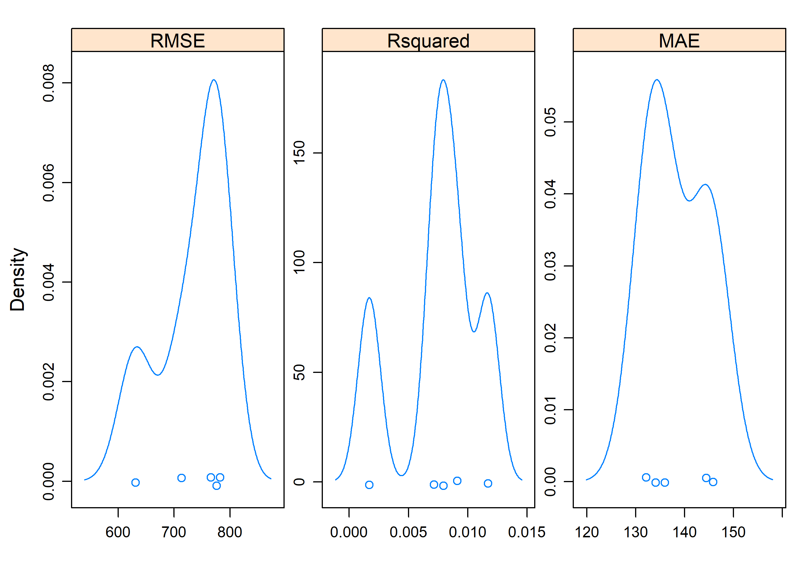
plot(glm_model, plotType = 'level')
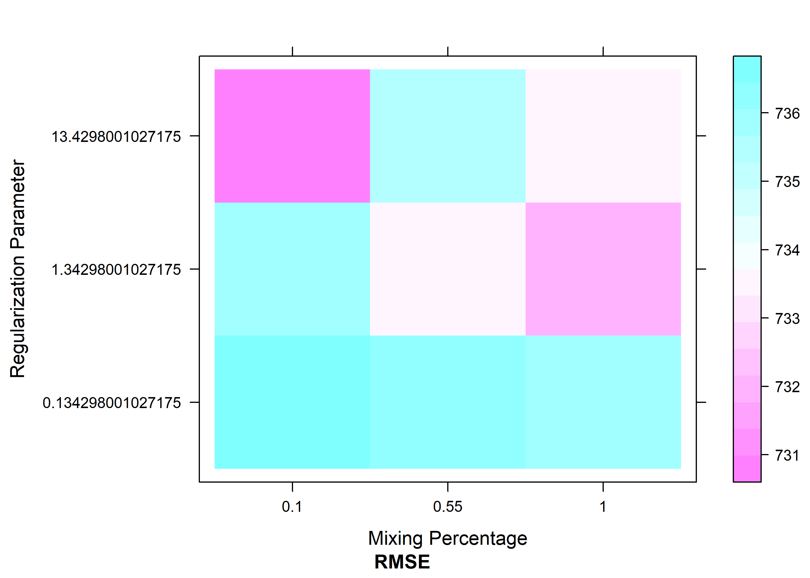
varImp(glm_model, scale = TRUE)
## glmnet variable importance
##
## only 20 most important variables shown (out of 721)
##
## Overall
## categoryGaming Hardware 100.0000
## video_game 40.4549
## world_first 34.1945
## categoryTabletop Games 22.5124
## android 15.1998
## categoryProduct Design 11.5854
## categoryHardware 10.5196
## categoryVideo Games 7.9148
## main_categoryGames 6.9413
## categoryWearables 5.4757
## kind 4.1382
## smart 3.9445
## pocket 3.4700
## main_categoryDesign 2.3441
## country.1US 1.7842
## light 1.4402
## pc 1.1729
## world 0.9437
## main_categoryTechnology 0.8501
## categoryGadgets 0.7044
Here we see that category columns do seem to be important to predictions, at least as judged by the absolute value of the estimated coefficient. These values are scaled so that categoryGamingHardware has the biggest absolute valued coefficient of all predictors in the final model. Some text such as “video_game” and ‘world_first’ also appear to be useful as predictors.
#mean RMSE of 5 folds?
mean(glm_model$resample$RMSE)
## [1] 733.5763
#FOR XGBOOST
resampleHist(xg_model)
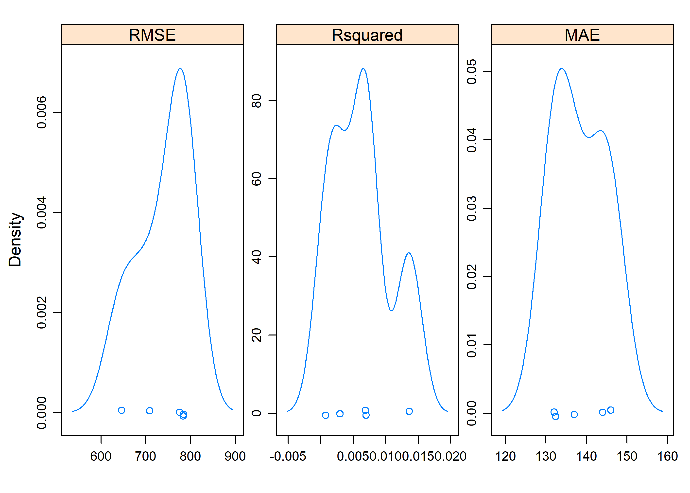
plot(xg_model, plotType = 'level')
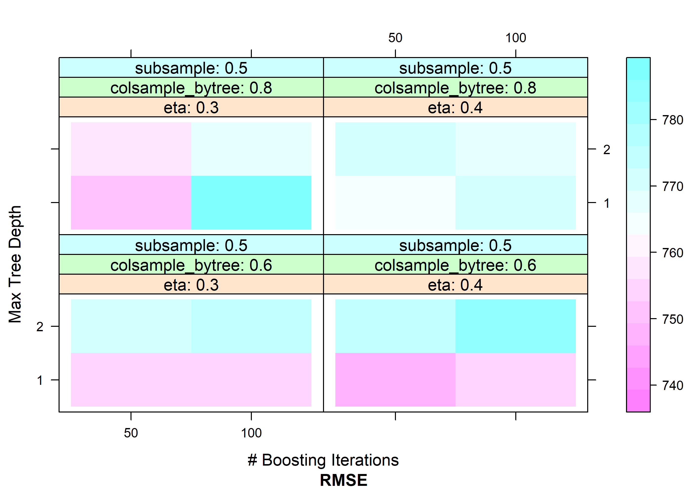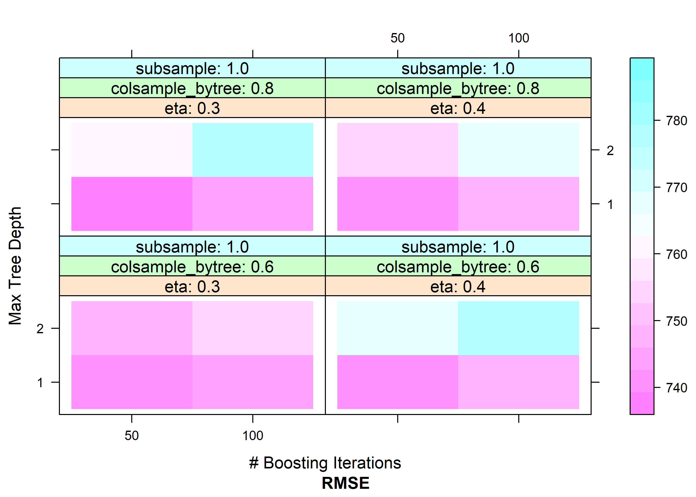
varImp(xg_model, scale = TRUE)
## xgbTree variable importance
##
## only 20 most important variables shown (out of 721)
##
## Overall
## goal 100.000
## kind 95.546
## main_categoryGames 39.757
## video_game 36.597
## categoryTabletop Games 34.201
## world_first 28.512
## android 25.003
## categoryGaming Hardware 21.571
## main_categoryDesign 10.726
## categoryProduct Design 10.267
## smart 4.551
## pocket 3.646
## total_chars 0.000
## day 0.000
## categoryDance 0.000
## re 0.000
## categoryMobile Games 0.000
## community 0.000
## country.1HK 0.000
## wars 0.000
This ranking of importance backs up what the glmnet model was telling us: category information and text features are indeed useful in making predictions. It is interesting that the campaign’s goal amount is deemed the most important predictor.
#mean RMSE for the 5 folds?
mean(xg_model$resample$RMSE)
## [1] 739.2199
It’s worth pointing out that if we relied simply on the in-fold RMSE to judge predictive performance, we would be expecting an out of sample RMSE around 740. It turns out that due to the presence of viral campaigns in the test set that this estimate is not quite reflective of the variety of data one might encounter once the predictive model were deployed on new campaigns. This is one argument why we want to keep a completely independent test set to mimic the performance in a deployed setting. We’ll do that below.
library(Metrics)
#GET PREDICTIONS
prd <- data.frame(predictions_glm = predict(glm_model, full_test),
predictions_xg = predict(xg_model, full_test),
actuals = full_test$backers)
#calculate rmse GLMNET
rmse(prd$actuals, prd$predictions_glm)
## [1] 1416.292
#calculate rmse xgboost
rmse(prd$actuals, prd$predictions_xg)
## [1] 1413.289
#check against training mean
rmse(prd$actuals, mean(full_train$backers))
## [1] 1419.206
#plot both on top
prd%>%
ggplot(aes(actuals, predictions_glm))+
geom_point(size=1, alpha=.2, color='blue')+
geom_point(aes(actuals, predictions_xg),size=1,alpha=.2, color='red')+
geom_abline(slope=1)+
scale_x_log10()+
scale_y_log10()+
theme_minimal()
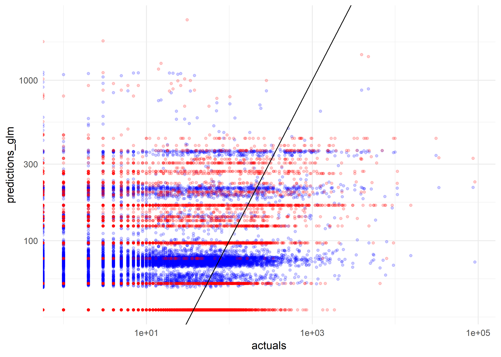
#density plot
prd%>%
gather()%>%
ggplot(aes(value,fill=key))+
geom_density(alpha=.5)+
scale_x_log10()+
theme_minimal()
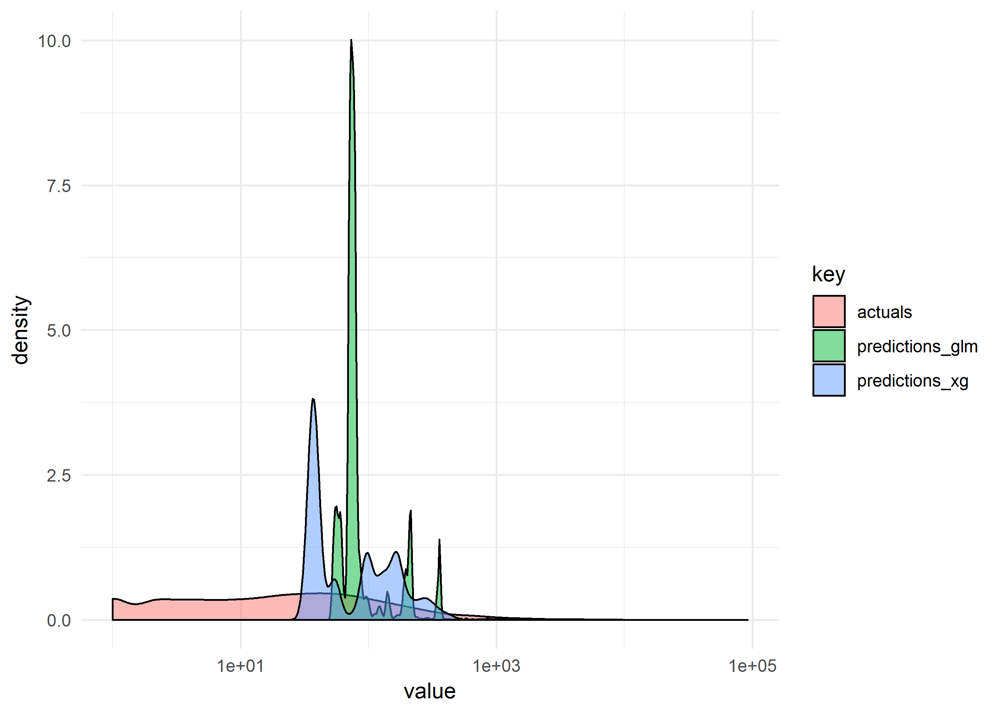
We can see that without any special pre-processing both models do not perform that well. In fact, both are very close to the performance of simply predicting the training set mean for the test set. Xgboost does a slightly better job of capturing variation in outcome, but even still, it cannot capture the extemely wide and flat outcome distribution.
In more practical terms, these results tell us that predicting the number of Kickstarter campaign backers is a tough task. Our test set RMSE implies that, on average, we should expect our predictions to be ‘off’ by about 1400 backers. Nevertheless, though our RMSE seems quite high, it tells us nothing about the practical value of such a prediction. The practical value is determined by the particular business context in which the model is deployed. It could be the case, for example, that this is good enough for making predictions about which campaigns to feature prominently on the platform’s website.
Let’s see now if we can do better. The most basic approach to handling a large number of unique factor levels is simply to use domain expertise or business logic to collapse the levels into a smaller, more manageable subset. Similarly, in the absence of domain expertise, an analyst may collapse the factor levels into an arbitrarily smaller number of levels, usually 10 or 20. The advantage to doing so is that it reduces dimensionality (since typically R will transform factor levels into dummy variables, thus adding one dimension per unique factor level) and speeds up model training time. Such an approach generally works due to the typically Pareto-distributed counts of factor levels—in many business scenarios a small fraction of unique levels will account for a large majority of all observed values. For example, the sales of just a few products may make up the bulk of a company’s total revenue.
The downside of the naïve approach is that we may of course be asked to analyze data we are not familiar with and so logically grouping factor levels may not be possible. Data may also be masked (i.e., pseudonymized) in order to preserve confidentiality, further obscuring the relationships among the factor levels. And perhaps more importantly, if the factor levels in the training and testing sets differ, we will encounter errors when attempting to make predictions using factor levels that the model has not encountered before.
For this initial experiment, we will use the number of unique categories that comprise roughy 80% of all observations. There are 159 unique campaign categories, but only 50 of those make up 80% of all observed categories in our dataset.
So in what follows, we will only keep the unique factor levels of the top 50 most common levels, and anything else will be converted to an “Other” category. The easiest way to do this is by using the forcats function fct_lump().
#Load in original dataset
df <- read.csv('kick_sample.csv', stringsAsFactors = F)
#Keep only the top 50 categories
df <- df %>%
mutate(category = fct_lump(category, 50))
Now we rerun the previous code using this “collapsed” version of the dataset.
#BREAKUP INTO TRAINING AND TESTING
set.seed(1)
sp <- createDataPartition(df$backers, p=.8, list=FALSE)
train <- df[sp,]
test <- df[-sp,]
prep_fun = function(x) {
x %>%
# make text lower case
str_to_lower %>%
# remove non-alphanumeric symbols
str_replace_all("[^[:alpha:]]", " ") %>%
# collapse multiple spaces
str_replace_all("\\s+", " ")
}
#prep_fun = tolower
tok_fun = word_tokenizer
#try to fix foreign characters
df$name <- iconv(df$name, 'Latin-9')
#create training iterator
it_train = itoken(train$name,
preprocessor = prep_fun,
tokenizer = tok_fun,
progressbar = TRUE)
stop_words = c(tm::stopwords('en'),"i", "me", "my", "myself",
"we", "our", "ours", "ourselves", "you", "your", "yours",
'a', 'the', 'for', 'of', 'and', 'in', 'to', 'act', 's')
#we'll use up to trigrams here
vocab = create_vocabulary(it_train, ngram = c(1, 3), stopwords = stop_words)
#we keep 500 words max. this is already pushing memory limits of R
#if you want to use dataframes as your data type
pruned_vocab = prune_vocabulary(vocab,
term_count_min = 10,
vocab_term_max = 500)
#keep <- which(nchar(pruned_vocab$term) > 1)
#pruned_vocab <- pruned_vocab[keep,]
vectorizer = vocab_vectorizer(pruned_vocab)
#create training dtm
dtm_train = create_dtm(it_train, vectorizer)
#DO SAME FOR TEST SET
it_test = itoken(test$name,
preprocessor = prep_fun,
tokenizer = tok_fun,
progressbar = TRUE)
stop_words = c(tm::stopwords('en'),"i", "me", "my", "myself",
"we", "our", "ours", "ourselves", "you", "your", "yours",
'a', 'the', 'for', 'of', 'and', 'in', 'to', 'act', 's')
vocab = create_vocabulary(it_test, ngram = c(1, 3), stopwords = stop_words)
#do dtm for test set
dtm_test = create_dtm(it_test, vectorizer)
#should be same number of columns
dim(dtm_test)
## [1] 9999 500
dim(dtm_train)
## [1] 40001 500
#create tf idf instance. apply to train then transform test based on it
model_tfidf = TfIdf$new()
#fit tfidf based on train
dtm_tfidf_train = model_tfidf$fit_transform(dtm_train)
#use train tfidf to transform test
dtm_tfidf_test = model_tfidf$transform(dtm_test)
dtm_full <- as.data.frame(as.matrix(dtm_tfidf_train), stringsAsFactors = F)
dtm_full_test <- as.data.frame(as.matrix(dtm_tfidf_test), stringsAsFactors = F)
#verify dimensions
dim(dtm_full)
## [1] 40001 500
#now get rid of "name" column before dividing back into train test
#we've already turned this column into text features
train_inp <- train %>%
select(-name)
test_inp <- test%>%
select(-name)
#COMBINE BACK WITH ORIGINAL FEATURES. now 515 features
full_train <- cbind(dtm_full, train_inp)
full_test <- cbind(dtm_full_test, test_inp)
#word is same as column name. need make unique! common error
colnames(full_train) <- make.unique(colnames(full_train))
colnames(full_test) <- make.unique(colnames(full_test))
#housekeeping to free up RAM
rm(dtm_full)
rm(vocab)
rm(dtm_test)
rm(dtm_tfidf_test)
rm(dtm_tfidf_train)
rm(dtm_train)
rm(dtm_full_test)
gc()
## used (Mb) gc trigger (Mb) max used (Mb)
## Ncells 3022943 161.5 5613254 299.8 5613254 299.8
## Vcells 62191143 474.5 160785797 1226.7 160780525 1226.7
#SET UP FOLDS WITHIN TRAINING SET
set.seed(123)
myFolds <- createFolds(full_train$backers, k=5)
# Create reusable trainControl object: myControl
control <- trainControl(
method='adaptive_cv', number=5,
verboseIter = TRUE,
index=myFolds,
preProcOptions = c("nzv", "center", "scale", "pca"),
returnData = FALSE,
adaptive = list(min=2, alpha=0.05, method='gls', complete=FALSE, search='random')
#savePredictions = 'final'
)
#Train Both Models
set.seed(1)
glm_model <- train(backers ~., data= full_train, method='glmnet', metric = "RMSE", trControl=control)
set.seed(1)
xg_model <- train(backers ~., data= full_train, method='xgbTree', metric='RMSE',
trControl=control, tuneLength=2)
library(Metrics)
#GET PREDICTIONS
prd <- data.frame(predictions_glm = predict(glm_model, full_test),
predictions_xg = predict(xg_model, full_test),
actuals = full_test$backers)
#calculate rmse GLMNET
rmse(prd$actuals, prd$predictions_glm)
## [1] 1415.99
#calculate rmse XG
rmse(prd$actuals, prd$predictions_xg)
## [1] 1412.976
#check against training mean
rmse(prd$actuals, mean(full_train$backers))
## [1] 1419.206
#plot both on top
prd%>%
ggplot(aes(actuals, predictions_glm))+
geom_point(size=1, alpha=.2, color='blue')+
geom_point(aes(actuals, predictions_xg),size=1,alpha=.2, color='red')+
geom_abline(slope=1)+
scale_x_log10()+
scale_y_log10()+
theme_minimal()
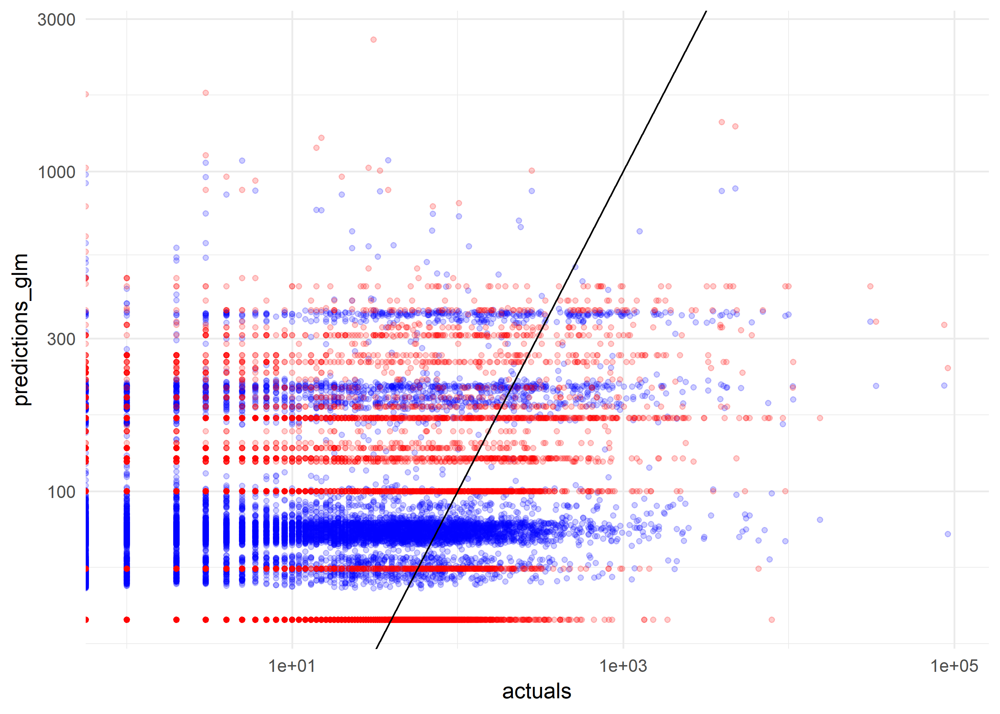
#density plot
prd%>%
gather()%>%
ggplot(aes(value,fill=key))+
geom_density(alpha=.5)+
scale_x_log10()+
theme_minimal()
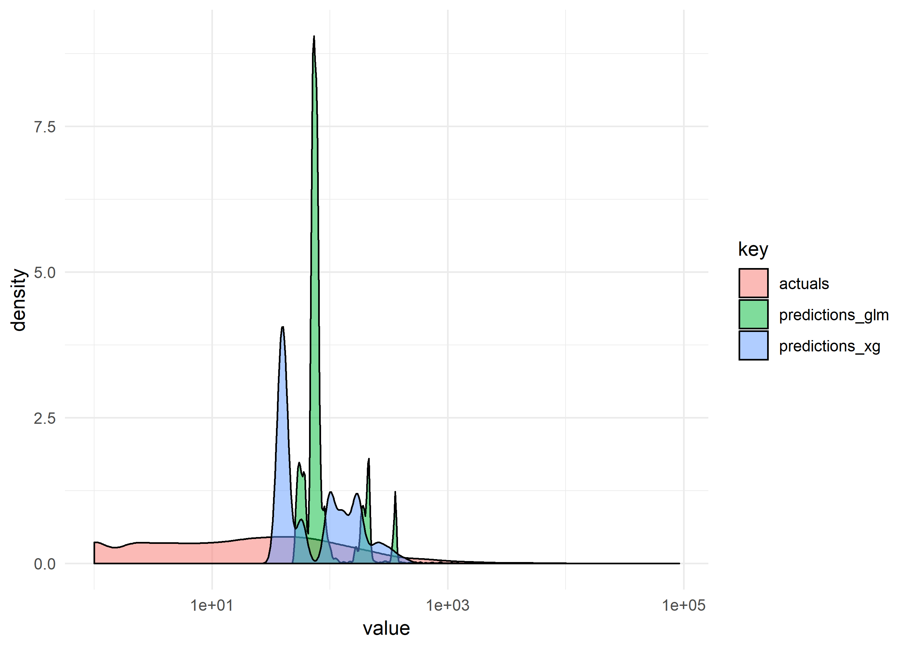
Overall, the xgboost and glm models still struggle at predicting the wide variety of Kickstarter campaign backers. But when we collapse categories it seems to benefit xgboost more than glm, judged by the very slight RMSE reduction for xgboost (1413 to 1412). So one takeaway is that by collapsing categories we can likely get (very slight) immediate predictive improvements when using boosting algorithms.
This approach to dealing with high-cardinality categorical predictors is based on the work of Mount & Zumel (2018)2 and the main functionality is included in the R package vtreat. The purpose of the package is to use a data frame to collect statistics that can then be used to replace the original categorical data (this process also incidentally solves the problem of missing values).
Essentially, the “impact” of a particular level is the difference in the expected value of the outcome given the level and the expected value of the unconditional outcome.
The result is a numeric value that will give the analyst a rough idea of how important a particular level is. For example, a level with a very large impact score may be worth examining since this level’s average outcome is much higher than the overall average.
Replacing the factor levels with numeric values two main advantages. First, it avoids creating extraneous dummy variables. Second, the issue of new levels arising in the test set is resolved. Regarding the first advantage, the package will actually create dummy variables for the most prevalent factor levels so that analysts can use these dummy variables to create potential interaction terms.
The package also has deals with missing values by using the mean value for the non-missing data and by creating a dummy variable is_missing, which can often times be useful in modeling when data are missing systematically. According to the package authors, in a business setting, missing data is often a reflection of where the data came from, so if we encode the missingness into a new variable we may gain some useful information that our models can learn from. Finally, the package also can perform single variable regressions of the factor level on the outcome in order to aid variable selection efforts. The user can set a significance threshold and factor levels which do not meet it are pooled together instead of kept as separate dummy variables (often useful in tree-based algorithms).
One key issue when determining the impact code of a particular categorical factor level is that the analyst must be careful to avoid “nested model bias.” Nested model bias occurs when a model is trained on a sample of data and then is later is applied on the same data. Because the same data was used for building and testing the model, performance metrics do not give an accurate idea of out of sample performance and we will have likely overfit to the training data.
Here’s an analogy to explain why this is a problem. Imagine you wish to gauge the math skills of a young student using a final exam. First, one month before the final exam you give him several old calculus practice exams to study with. Then, on the day of the test, you give him the exact same practice exams in the exact same order. Would you be confident in the student’s ability to solve new—but slightly different—calculus problems? What if the student has merely memorized the answers to the practice exams but fails to be able to generalize the important calculus concepts and apply them in novel situations? How would we know? In this case, we would say he has “overfit” his learning to the practice exams and his test performance is not actually indicative of his skill in solving calculus problems (i.e., it’s overly optimistic). It is this kind of situation we also wish to avoid when training and evaluating our machine learning models. We have two main ways to deal with this issue and they are both supported by vtreat.
The first solution when computing the impact code is to divide the data into a normal training and testing set. However, then one divides the training set into further “folds” or pieces: for all but one of these folds we will determine the difference in expected values and then “apply” the computation to the “out of sample” fold not used in calculating the difference in expected values. We repeat this until we have applied the calculation to every fold and then average the results among all folds. The final result is an ‘impact score’ that is less biased when later on a model is trained and tested on out of sample data. The mapping (converting the factor levels into numeric values) of these impact scores is then reproduced on the test set data. The test set impact scores will have been transformed only using information available in the training set, which simulates what would happen were we to deploy this model in the real world on new data that were previously unseen by our model.
The other solution is to divide our data into three sets: training, testing, and evaluation. This image below shows the workflow (from Mount & Zumel 2018 2) 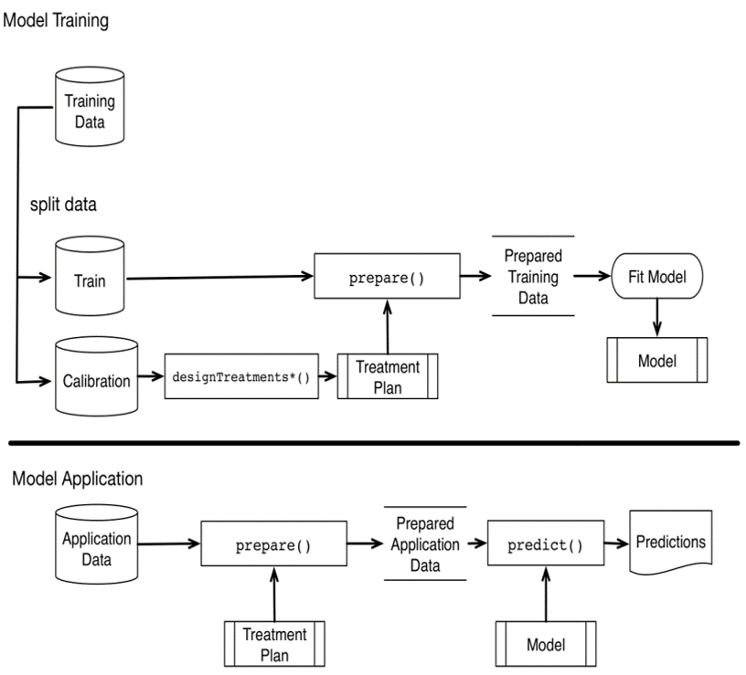 In the evaluation set, we compute the statistics needed for the impact score. Then, we apply the appropriate “treatment” (based on the expected differences in our evaluation set) to the training and testing sets. This again avoids the problem of having our impact scores unfairly reflect characteristics of the test set, which would lead us to believe the model’s performance is really better than it is on unseen data. The downside of this approach is that you lose some portion of your data to the evaluation set, which is typically 10-20% of all data. So in cases where you have less data, the cross-validation approach may be better. In order to avoid setting up three data partitions, we will go the cross-validation route.
library(vtreat)
library(caret)
df <- read.csv('kick_sample.csv', stringsAsFactors = F)
#BREAK UP INTO TRAINING AND TESTING
set.seed(1)
sp <- createDataPartition(df$backers, p=.8, list=FALSE)
train <- df[sp,]
test <- df[-sp,]
prep_fun = function(x) {
x %>%
# make text lower case
str_to_lower %>%
# remove non-alphanumeric symbols
str_replace_all("[^[:alpha:]]", " ") %>%
# collapse multiple spaces
str_replace_all("\\s+", " ")
}
#prep_fun = tolower
tok_fun = word_tokenizer
#try to fix foreign characters
df$name <- iconv(df$name, 'Latin-9')
#create training iterator
it_train = itoken(train$name,
preprocessor = prep_fun,
tokenizer = tok_fun,
progressbar = TRUE)
stop_words = c(tm::stopwords('en'),"i", "me", "my", "myself",
"we", "our", "ours", "ourselves", "you", "your", "yours",
'a', 'the', 'for', 'of', 'and', 'in', 'to', 'act', 's')
#we'll use up to trigrams here
vocab = create_vocabulary(it_train, ngram = c(1, 3), stopwords = stop_words)
#we keep 500 words max. this is already pushing memory limits of R
pruned_vocab = prune_vocabulary(vocab,
term_count_min = 10,
vocab_term_max = 500)
#keep <- which(nchar(pruned_vocab$term) > 1)
#pruned_vocab <- pruned_vocab[keep,]
vectorizer = vocab_vectorizer(pruned_vocab)
#create training dtm
dtm_train = create_dtm(it_train, vectorizer)
#Now rinse and repeat for the test set
it_test = itoken(test$name,
preprocessor = prep_fun,
tokenizer = tok_fun,
progressbar = TRUE)
stop_words = c(tm::stopwords('en'),"i", "me", "my", "myself",
"we", "our", "ours", "ourselves", "you", "your", "yours",
'a', 'the', 'for', 'of', 'and', 'in', 'to', 'act', 's')
vocab = create_vocabulary(it_test, ngram = c(1, 3), stopwords = stop_words)
#do dtm for test set
dtm_test = create_dtm(it_test, vectorizer)
#should be same number of columns
dim(dtm_test)
## [1] 9999 500
dim(dtm_train)
## [1] 40001 500
#create tf idf instance. apply to train then transform test based on it
model_tfidf = TfIdf$new()
#fit tfidf based on train
dtm_tfidf_train = model_tfidf$fit_transform(dtm_train)
#use train tfidf to transform test
dtm_tfidf_test = model_tfidf$transform(dtm_test)
dtm_full <- as.data.frame(as.matrix(dtm_tfidf_train), stringsAsFactors = F)
dtm_full_test <- as.data.frame(as.matrix(dtm_tfidf_test), stringsAsFactors = F)
dim(dtm_full)
## [1] 40001 500
The language used by vtreat is confusing at first, but a “crossframe” experiment is simply using a cross-validation procedure to estimate impact scores. If we didn’t want to use this approach, we could also split our data into three sets: training, testing, and calibration. The ‘calibration’ set would be used solely to estimate the impact scores and help us to convert the categorical levels into numeric values. Again, we don’t want to do this using the testing set because it would then invalidate our performance estimates since we would then be estimating the model’s performance using the same data used to estimate the impact scores.
If we reduce our threshold for prune significance due to multiple comparison (similar to a Bonferroni adjustment), we will end up with 59 predictors from our original 15, not including our text features.
#this conducts the 3 fold cross val
cfe <- mkCrossFrameNExperiment(train, setdiff(colnames(train), 'name'), 'backers',
rareCount = 50,
minFraction = .01,
ncross = 5,
verbose=TRUE)
## [1] "vtreat 1.3.2 start initial treatment design Sun Mar 03 09:09:46 2019"
## [1] " start cross frame work Sun Mar 03 09:09:56 2019"
## [1] " vtreat::mkCrossFrameNExperiment done Sun Mar 03 09:10:02 2019"
#adjust significance level of predictor downwards to compensate for multiple comparisons
psig <- 1/ncol(train)
#apply our results to the training and testing sets using prepare()
train_treat <- prepare(treatments, train, pruneSig = psig)
test_treat <- prepare(treatments, test, pruneSig = psig)
We use our normal adaptive resampling approach as we did earlier.
#SET UP FOLDS WITHIN TRAINING SET
set.seed(123)
myFolds <- createFolds(train_treat$backers, k=5)
# Create reusable trainControl object: myControl
control <- trainControl(
method='adaptive_cv', number=5,
verboseIter = TRUE,
index=myFolds,
#preProcOptions = c("nzv", "center", "scale", "pca"),
returnData = FALSE,
adaptive = list(min=2, alpha=0.20, method='gls', complete=FALSE, search='random')
#savePredictions = 'final'
)
Now we add back our vtreated data to the text features.
#COMBINE BACK WITH text features. now 559 features
full_train <- cbind(dtm_full, train_treat)
full_test <- cbind(dtm_full_test, test_treat)
#word is same as column name. need make unique! common error
colnames(full_train) <- make.unique(colnames(full_train))
colnames(full_test) <- make.unique(colnames(full_test))
rm(dtm_full)
rm(vocab)
rm(dtm_test)
rm(dtm_tfidf_test)
rm(dtm_tfidf_train)
rm(dtm_train)
rm(dtm_full_test)
gc()
## used (Mb) gc trigger (Mb) max used (Mb)
## Ncells 3057352 163.3 5613254 299.8 5613254 299.8
## Vcells 65228161 497.7 160785797 1226.7 160785751 1226.7
glm_model <- train(backers ~., data= train_treat, method='glmnet', metric = "RMSE", trControl=control)
xg_model <- train(backers ~., data= train_treat, method='xgbTree', metric='RMSE',
trControl=control, tuneLength=2)
varImp(glm_model, scale = TRUE)
## glmnet variable importance
##
## only 20 most important variables shown (out of 58)
##
## Overall
## country_catP 100.00000
## word_count_clean 9.64095
## category_catN 5.63701
## dow_deadline_catN 1.71408
## main_category_catN 0.66561
## total_chars_clean 0.47224
## country_catD 0.21596
## country_catN 0.10875
## main_category_catD 0.02827
## category_lev_x_Music 0.00000
## category_lev_x_Film_Video 0.00000
## category_lev_x_Apparel 0.00000
## main_category_lev_x_Photography 0.00000
## currency_catN 0.00000
## category_lev_x_Crafts 0.00000
## main_category_lev_x_Music 0.00000
## currency_lev_x_EUR 0.00000
## category_lev_x_Technology 0.00000
## main_category_lev_x_Publishing 0.00000
## yr_deadline_clean 0.00000
After running our ‘cross frame’ and then applying the treatment procedure to our data we end up with three new features for each categorical predictor. These are marked with certain codes.
So for example, our glmnet model latched on to the prevalence (numeric frequency) of the country (‘country_catP’) as the most important predictor. Next it used the impact score of the category column (‘category_catN’) as the second most important predictor. Notice that vtreat still creates dummies for most frequent levels (which they claim are favored for tree-based methods). These show up as ‘category_lev_x_Music’
varImp(xg_model, scale = TRUE)
## xgbTree variable importance
##
## only 20 most important variables shown (out of 58)
##
## Overall
## category_catN 100.0000
## main_category_catD 7.7847
## word_count_clean 2.7065
## country_catD 2.6653
## country_catN 2.6389
## total_chars_clean 1.7642
## dow_deadline_catN 1.4014
## yr_deadline_clean 1.3780
## category_catP 1.2332
## category_catD 0.9531
## dow_deadline_catP 0.5248
## dow_deadline_catD 0.2941
## country_catP 0.2930
## currency_lev_x_USD 0.0000
## main_category_lev_x_Fashion 0.0000
## category_lev_x_Photography 0.0000
## category_lev_x_Art 0.0000
## category_lev_x_Fiction 0.0000
## main_category_lev_x_Art 0.0000
## category_lev_x_Apparel 0.0000
library(Metrics)
#GET PREDICTIONS
prd <- data.frame(predictions_glm = predict(glm_model, test_treat),
predictions_xg = predict(xg_model, test_treat),
actuals = test_treat$backers)
#deal with negative predictions by turning to 0
prd <- prd%>%
mutate(predictions_glm = ifelse(predictions_glm < 0, 0, predictions_glm))%>%
mutate(predictions_xg = ifelse(predictions_xg < 0, 0, predictions_xg))
#calculate rmse GLMNET
rmse(prd$actuals, prd$predictions_glm)
## [1] 1414.509
#calculate rmse xg
rmse(prd$actuals, prd$predictions_xg)
## [1] 1414.316
#check against training mean
rmse(prd$actuals, mean(train_treat$backers))
## [1] 1419.206
#plot both on top
prd%>%
ggplot(aes(actuals, predictions_glm))+
geom_point(size=1, alpha=.2, color='blue')+
geom_point(aes(actuals, predictions_xg),size=1,alpha=.2, color='red')+
geom_abline(slope=1)+
scale_x_log10()+
scale_y_log10()+
labs(title='Vtreated data', subtitle='Glmnet (blue) vs. xgBoost (red)')+
theme_minimal()
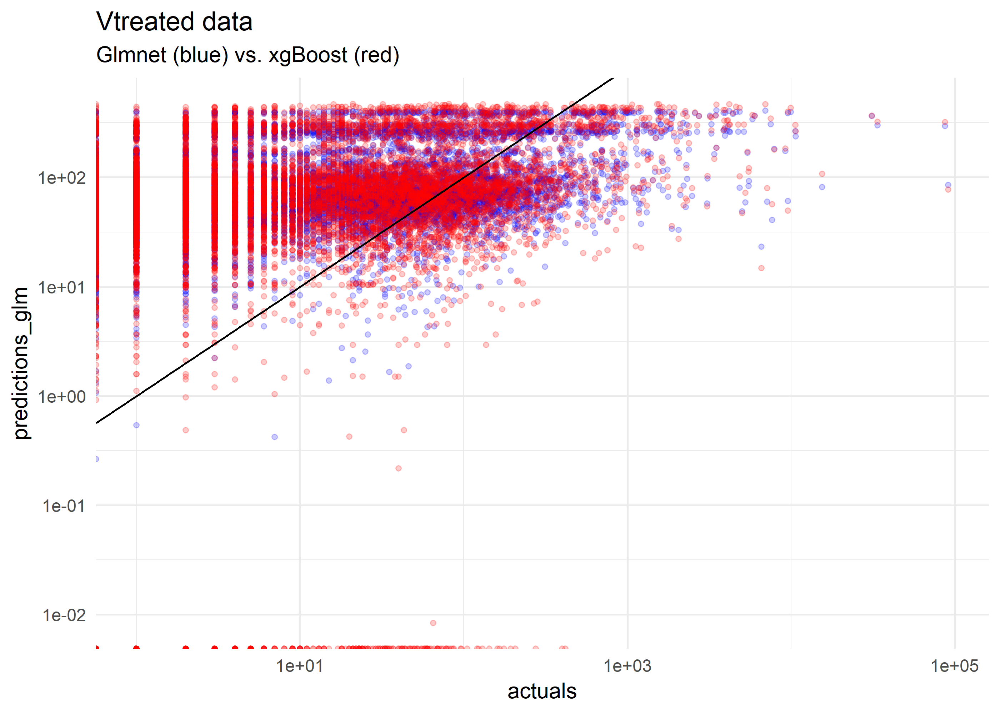
#density plot
prd%>%
gather()%>%
ggplot(aes(value,fill=key))+
geom_density(alpha=.5)+
scale_x_log10(labels=scales::comma)+
labs(title='Vtreated data', subtitle='Glmnet (green) vs. xgBoost (blue) vs. Actual (red)')+
theme_minimal()
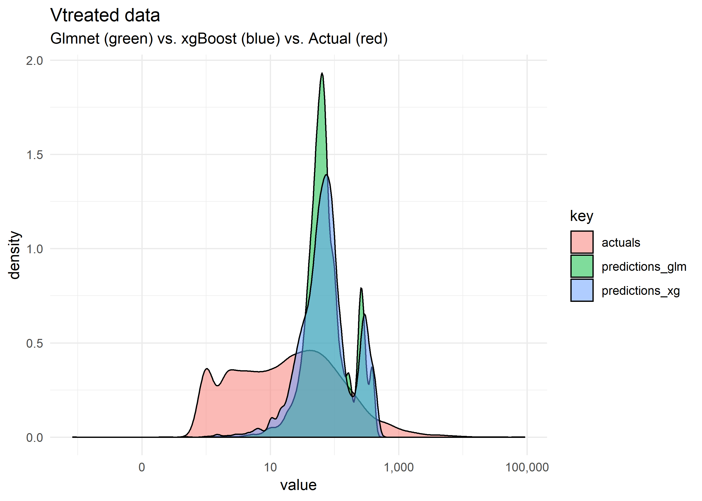
Interestingly here both the xgboost and the glm models appear to be making very similar predictions. But both models cannot seem to predict the very low or high values. For me, I take this as evidence that categorical predictors are actually quite useful to xgboost and tree-based methods. By converting the categorical predictors into numeric versions, we seem to have lost the ability to make extremely high or low predictions. So perhaps the takeaway here is that vtreat should be used with caution with any tree-based method. In fact, the authors of vtreat state explicitly that they envision their approach to be used with LASSO, where there is a built-in variable selection mechanism to deal with the creation of the new numeric predictors.
The final method borrows the idea of a hashing function from computer science and attempts to deal with high-cardinality categorical predictors by means of memory and speed savings at the expense of model interpretability.
The method works by mapping our factor levels to numeric indices, which are then used as binary features. For each categorical level, a hashing function is used to transform the text into a numeric representation (the featureHashing package in R uses the murmurhash3 hashing function). A hash is any function that can be used to map data of an arbitrary size to a fixed size. Next, an appropriate hash size is selected by the user. This value is typically a power of two, and can range from 2^12 to 2^30 depending on the number of unique factor levels one would like to represent. Then, modulo division is performed on the hashed representation using the specified hash size as the divisor and the hashed value as the dividend. The remainder of this computation is then used to assign the hashed feature to a “bucket,” which is now represented as a number.
For example, if the hashed value for “movies” is 35 and the hash size is 2^2, after doing modulo division (in R: 35 %% 4) we end up with a value of 3 (there are 2^2 – 1 (0,1,2,3) possible buckets for the remainder). The feature “movies” is now represented as a dummy variable 3. Finally, the model is trained normally using these numbers to represent the hashed factor levels.
There are several benefits to using this technique. First, it saves memory because instead of potentially creating hundreds or thousands of dummy variables using strings as the feature names, we are now only using numeric representations of text—which can be represented more efficiently. Also, the effect of hashing means we can reduce the number of unique factor levels to any arbitrary size. For instance, we could map 1000 unique factor levels to 10 buckets if desired.
This advantage is also a potential weak point of the method: if we use a hash size that is too small, we will end up with hash collisions, whereby different factor levels end up being mapped to the same bucket. Most of the time this does not significantly affect predictive performance, but it could if two contradictory factor levels happened to be put into the same bucket. As an illustration, if “movies” and “television” were mapped to the same bucket this would likely be OK; but if the levels “Satanic rock” and “Christian rock” were mapped to the same bucket, then the resulting feature would lose any interpretable meaning since we could not be sure whether the feature’s weight in the model was due to the effect of Satanic rock or Christian rock. The good news is that by choosing an appropriately large hash size we can reduce the chance of such unfortunate collisions from occurring. But again, the major drawback is that by converting our factor levels into numbers, we no longer have the ability to gauge variable importance, or understand exactly how different variables contribute to the model’s predictions.
library(FeatureHashing)
df <- read.csv('kick_sample.csv', stringsAsFactors = F)
#BREAKUP INTO TRAINING AND TESTING
set.seed(1)
sp <- createDataPartition(df$backers, p=.8, list=FALSE)
train <- df[sp,]
test <- df[-sp,]
prep_fun = function(x) {
x %>%
# make text lower case
str_to_lower %>%
# remove non-alphanumeric symbols
str_replace_all("[^[:alpha:]]", " ") %>%
# collapse multiple spaces
str_replace_all("\\s+", " ")
}
#prep_fun = tolower
tok_fun = word_tokenizer
#try to fix foreign characters
df$name <- iconv(df$name, 'Latin-9')
#create training iterator
it_train = itoken(train$name,
preprocessor = prep_fun,
tokenizer = tok_fun,
progressbar = TRUE)
stop_words = c(tm::stopwords('en'),"i", "me", "my", "myself",
"we", "our", "ours", "ourselves", "you", "your", "yours",
'a', 'the', 'for', 'of', 'and', 'in', 'to', 'act', 's')
#we'll use up to trigrams here
vocab = create_vocabulary(it_train, ngram = c(1, 3), stopwords = stop_words)
#we keep 500 words max. this is already pushing memory limits of R
pruned_vocab = prune_vocabulary(vocab,
term_count_min = 10,
vocab_term_max = 500)
#keep <- which(nchar(pruned_vocab$term) > 1)
#pruned_vocab <- pruned_vocab[keep,]
vectorizer = vocab_vectorizer(pruned_vocab)
#create training dtm
dtm_train = create_dtm(it_train, vectorizer)
#Now rinse and repeat for the test set
it_test = itoken(test$name,
preprocessor = prep_fun,
tokenizer = tok_fun,
progressbar = TRUE)
stop_words = c(tm::stopwords('en'),"i", "me", "my", "myself",
"we", "our", "ours", "ourselves", "you", "your", "yours",
'a', 'the', 'for', 'of', 'and', 'in', 'to', 'act', 's')
vocab = create_vocabulary(it_test, ngram = c(1, 3), stopwords = stop_words)
#do dtm for test set
dtm_test = create_dtm(it_test, vectorizer)
#should be same number of columns
dim(dtm_test)
## [1] 9999 500
dim(dtm_train)
## [1] 40001 500
#create tf idf instance. apply to train then transform test based on it
model_tfidf = TfIdf$new()
#USE THESE SINCE DCGMATRIX OBJECTS
#fit tfidf based on train
dtm_tfidf_train = model_tfidf$fit_transform(dtm_train)
#use train tfidf to transform test
dtm_tfidf_test = model_tfidf$transform(dtm_test)
#COMBINE WITH NON CATEGORICAL FEATURES. We will feature hash the cats
##COMBINE WITH ORIGINAL FEATURES
full_tr <- cbind(dtm_tfidf_train, train$goal, train$word_count, train$total_chars, train$exc_count,
train$yr_deadline, train$mo_deadline, train$extreme)
#only needed for xgboost
target <- train$backers
dim(full_tr)
## [1] 40001 507
#Create full test set by combining original features back
full_ts <- cbind(dtm_tfidf_test, test$goal, test$word_count, test$total_chars,
test$exc_count, test$yr_deadline, test$mo_deadline, test$extreme)
target_ts <- test$backers
Now we will consider all possible two way interactions among factor variables in our dataset
#create all 2 way interactions among factor variables
f <- ~ (category + main_category +currency +country)^2
For now, we will construct 2^19 (524,288) features for these combinations of factor levels. Then we will add the 500 text features to get 524,789 total feature columns. A dataset with dimensions 40000 x 524789 would take up far too much RAM were it stored in a data frame. That’s why we need to use sparse matrices.
library(FeatureHashing)
#hash for factor levels in training
tr_hash = hashed.model.matrix(f, data=train, hash.size=2^19, transpose=FALSE, create.mapping = TRUE)
#view examples of factor interactions
hash.mapping(tr_hash)[1:5]
## categoryArt:countryNL main_categoryPublishing:countryLU
## 82092 36139
## categoryDrama:currencyDKK categoryWebseries:countryDE
## 215718 378480
## categoryGraphic Design:countryCA
## 512448
#pass this to training
dtm_full_tr <- cbind(full_tr, tr_hash)
target_tr <- train$backers
dim(dtm_full_tr)
## [1] 40001 524795
#hash for factor levels in testing
ts_hash = hashed.model.matrix(f, data=test, hash.size=2^19, transpose=FALSE)
#combine
dtm_full_ts <- cbind(full_ts, ts_hash)
target_ts <- test$backers
dim(dtm_full_ts)
## [1] 9999 524795
If you want to pass in sparse matrices you can’t use a formula, instead we need to use the x/y interface. This will also not auto-create dummy vars for us the way the formula interface does. We’ll use this instead of the adaptive cross validation we used earlier. Caret doesn’t work nicely with sparse matrices here for some reason.
library(glmnet)
#Use 5 fold CV
set.seed(1)
glm_model <- cv.glmnet(dtm_full_tr, target_tr, alpha = c(.1, .5, 1), lambda=seq(0.00001,1000, 10),
family = "gaussian", type.measure = "mse", nfolds=5)
To save time we will use the original function from the glmnet package. We didn’t use the previous adaptive resampling procedure simply because model training took too long.
#GET PREDICTIONS
prd <- data.frame(predictions_glm = predict(glm_model, dtm_full_ts, s="lambda.min"),
predictions_xg = predict(xg_model, dtm_full_ts),
actuals = target_ts)%>%
dplyr::rename('predictions_glm'=X1)
#Set negative predictions to 0
prd <- prd%>%
mutate(predictions_glm = ifelse(predictions_glm < 0, 0, predictions_glm))%>%
mutate(predictions_xg = ifelse(predictions_xg < 0, 0, predictions_xg))
#calculate rmse GLMNET
rmse(prd$actuals, prd$predictions_glm)
## [1] 1416.422
#calculate rmse XGBOOST
rmse(prd$actuals, prd$predictions_xg)
## [1] 1388.013
#check against training mean
rmse(prd$actuals, mean(train$backers))
## [1] 1419.206
#plot both on top
prd%>%
ggplot(aes(actuals, predictions_glm))+
geom_point(size=1, alpha=.2, color='blue')+
geom_point(aes(actuals, predictions_xg),size=1,alpha=.2, color='red')+
geom_abline(slope=1)+
scale_x_log10()+
scale_y_log10()+
labs(title='Feature Hashed Data', subtitle='Glmnet (blue) vs. xgBoost (red)')+
theme_minimal()
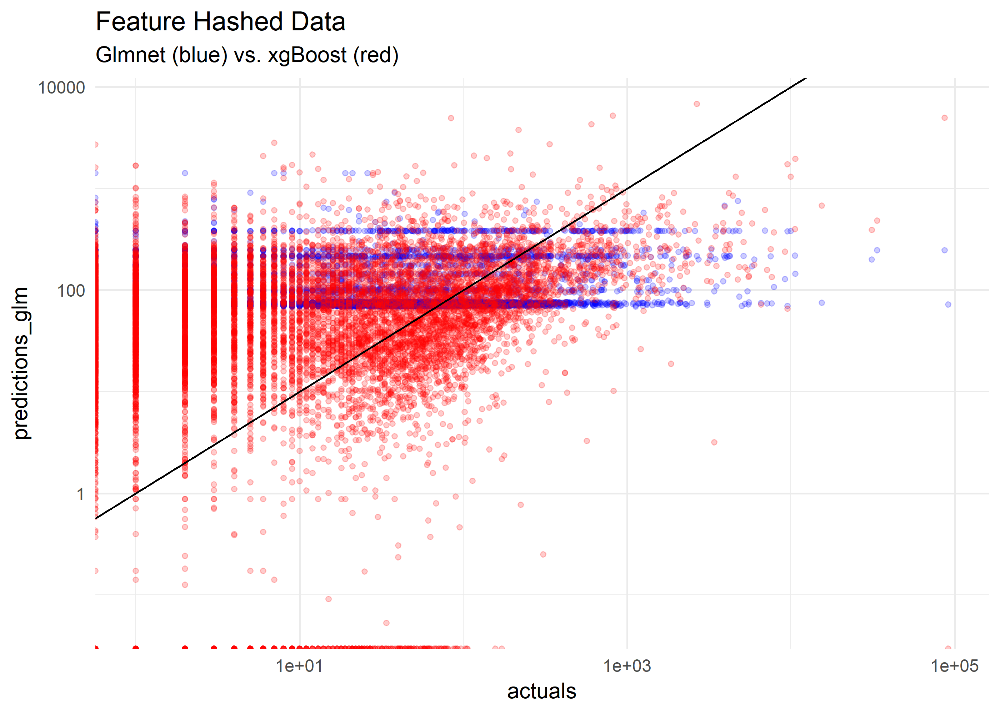
#density plot
prd%>%
gather()%>%
ggplot(aes(value,fill=key))+
geom_density(alpha=.5)+
scale_x_log10(labels=scales::comma)+
labs(title='Feature Hashing', subtitle='Glmnet (green) vs. xgBoost (blue) vs. Actual (red)')+
theme_minimal()
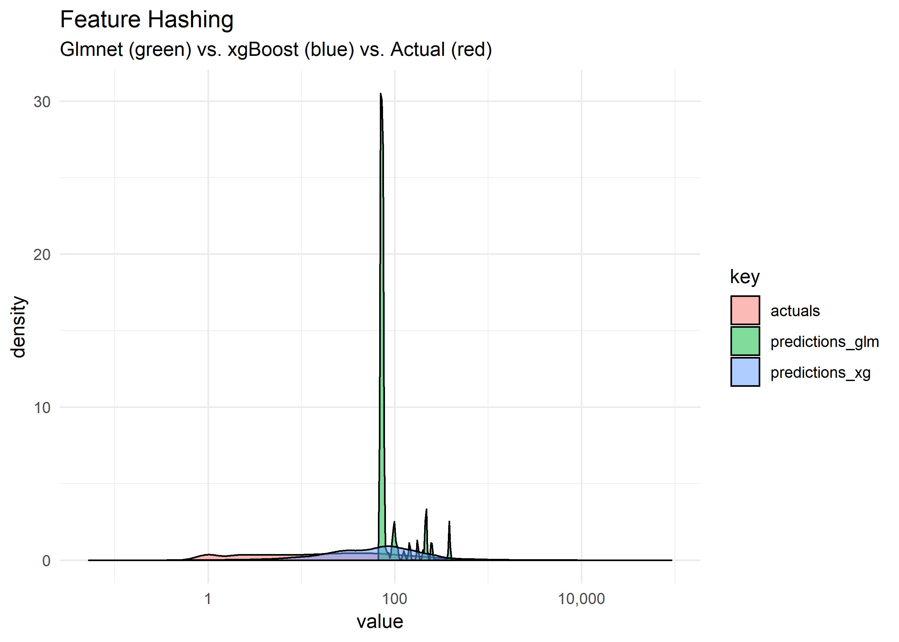
Once we begin to feature hash, the power of xgboost begins to shine. We can see from the chart above that the xgboost predictions seem to do a much better job at replicating the outcome distribution in the test set. Meanwhile, the glm model seems to just predict around the training set mean, with a few higher predictions–probably based on certain categorical factors. Overall feature hashing gives a very modest performance boost only to the xgboost model.
I first learned about this creative approach through Manuel Amunategui’s blog post. This technique borrows from the field of computational linguistics and combines two seemingly unrelated data mining methods to automate the problem of manually grouping related factor levels. The major benefit of this method is that it does not require any special domain knowledge in order to produce fairly robust groupings of categories. All the grouping is done on the basis of the characteristics of the words used as categories.
The method proceeds as follows. First, string distance is computed using any one of the many string distance metrics: Levenshtein, Jaro-Winkler, Hamming, etc. Typically, these metrics are computed by taking two strings (usually short strings which keep the number of permutations reasonable) and then performing several actions on this pair: insertion, deletion, substitution, and transposition of adjacent characters. The goal is to determine how many actions are needed in order to transform one string into another. For each of these four actions, each metric assigns some cost value. The sum of these costs is the distance between the strings.
As a very general example, imagine computing the string distance of the words kitten and sitting. First we could substitute the k for an s. Then we could substitute the e with an i. Then, finally, we could insert a g at the end to make kitten become sitting. These three actions and their associated cost will allow us to compute the distance between the strings.
Once a distance matrix for all pairs of strings has been computed, then typically an agglomerative clustering algorithm is used to combine the words into a pre-defined number of clusters k. This method works by iteratively merging the nearest cluster objects together until there is one final cluster of all objects.
One downside to this method is that selecting k (the desired number of clusters) is left up to the analyst and that depending on the string distance metric chosen and the linkage criterion used, different clusters will arise. For example, using the maximum or minimum distance between elements of two clusters will result in clusters being merged in different orders during the agglomeration process.
There are further downsides to this method. Firstly, it does not scale well to categorical features with more than approximately 15,000 unique factor levels. This is because the memory needed to store the distance matrix grows exponentially. So it is possible analysts will first need to manually group some values before using this method in cases where there are many thousands of unique values. Secondly, we run into the problem of nested model bias again (i.e., information leakage) due to the fact we first need to combine training and test sets in order to assign clusters to the strings. This means that our training clusters and therefore our model was built using information contained in the test set and thus we should be wary of its performance on the test set, since some information in the test set was actually used to train the model. Test set performance may thus be overly optimistic.
library(stringdist)
library(caret)
library(tidyverse)
library(tm)
library(tidytext)
df <- read.csv('kick_sample.csv', stringsAsFactors = F)
#collapse categories into 100 Unique ones to reduce complexity
#
df <- df%>%
mutate(new_cat = fct_lump(category, 100))
#BREAKUP INTO TRAINING AND TESTING. Do after clustering.
set.seed(1)
sp <- createDataPartition(df$backers, p=.8, list=FALSE)
train <- df[sp,]
test <- df[-sp,]
We see that we now have 1804 unique categories once we combine the four categorical columns. You can paste as many character columns together as you want. Here we paste together the text of four columns into one long string.
library(textclean)
library(tidytext)
df%>%
mutate(new_cat = paste0(main_category, category, currency, country))%>%
select(new_cat)%>%
unique()%>%
pull()%>%
length()
## [1] 1804
#Examine 10 examples of categories we'll use to cluster
df%>%
mutate(new_cat = paste0(main_category, category, currency, country))%>%
select(new_cat)
## new_cat
## 1 PublishingAcademicUSDUS
## 2 MusicMusicGBPGB
## 3 PhotographyAnimalsUSDUS
## 4 PhotographyPhotographyUSDUS
## 5 FoodFoodEURDE
## 6 DesignProduct DesignUSDUS
## 7 ArtArtUSDUS
## 8 GamesTabletop GamesUSDUS
## 9 GamesTabletop GamesUSDUS
## 10 FoodFood TrucksEURAT
#finally perform transformation of new pasted strings
#delete old columns
df <- df%>%
mutate(new_cat = paste0(main_category, category, currency, country),
main_category= NULL,
category=NULL,
currency = NULL,
country=NULL)
Now we take these 1804 unique category levels and calculate string distance based on Jaro-Winkler distance.
dis_full <- stringdistmatrix(unique(df$new_cat)
,method = "jw",useNames = 'strings')
hc <- hclust(as.dist(dis_full), 'ward.D')
#Plot is too chaotic to really read
plot(hc, cex=.01)
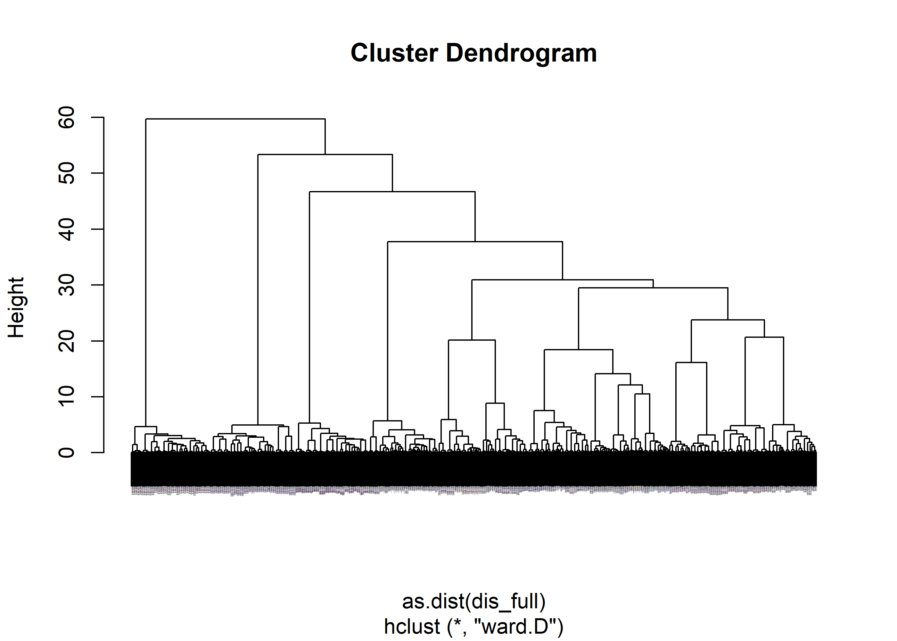
At this point you will need to experiment. In the interest of time, we will only cluster on 10 categories. But it would be worth your time to see how the predictive performance varies as you change the number of clusters from 10 to say, 100.
#Here we decide on how many clusters we want. Let's try 10
df_clust <- data.frame(category = unique(df$new_cat), cluster = cutree(hc, k=10),
stringsAsFactors = F)
#In order to see what's happening here let's make a visual
df_clust%>%
group_by(cluster)%>%
sample_frac(.05)%>%
mutate(group_row = row_number(cluster))%>%
#filter(group_row < 200)%>%
ggplot(aes(cluster, group_row, color=factor(cluster)))+
geom_text(aes(label = category), size=3, alpha=.8, position = position_jitter(height=100))+
guides(color=FALSE)+
scale_x_continuous(breaks = seq(1,50), labels = seq(1,50,1))+
theme_minimal()+
labs(title='category clusters k = 10', x='cluster', y='')+
theme(axis.text.y = element_blank(),
panel.grid.major = element_blank(),
panel.grid.minor = element_blank())
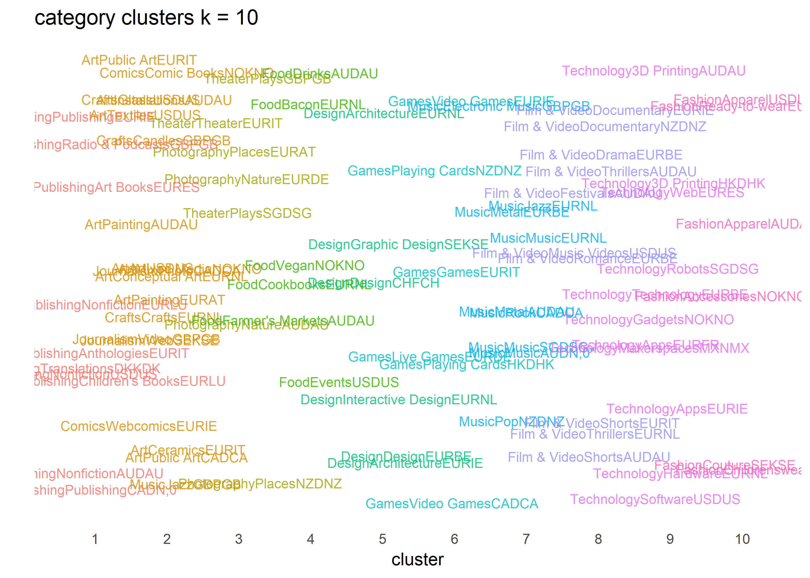 From this sampled version of the cluster assignments we can get a feel for what is happening in each cluster. For example, cluster 4 seems to be food categories and cluster 10 seems to be about technology.
Now we join back the cluster assignments to the original dataframe and use the cluster assignment in lieu of the actual string level.
df <- df%>%
inner_join(df_clust, by=c('new_cat'='category'))%>%
mutate(cluster = as.factor(cluster))
glimpse(df)
## Observations: 50,000
## Variables: 13
## $ name <chr> "3 great ways to have a big income with no form...
## $ backers <int> 0, 51, 136, 0, 3, 30, 0, 6, 232, 2, 170, 104, 1,...
## $ goal <dbl> 5000.00, 7855.97, 2200.00, 5000.00, 29296.76, 20...
## $ dow_deadline <chr> "Sun", "Wed", "Sun", "Fri", "Sun", "Sat", "Mon",...
## $ yr_deadline <int> 2015, 2017, 2014, 2014, 2016, 2012, 2017, 2017, ...
## $ mo_deadline <int> 7, 10, 11, 8, 9, 6, 4, 6, 5, 9, 11, 10, 7, 3, 10...
## $ word_count <int> 11, 1, 2, 6, 7, 7, 3, 5, 10, 8, 8, 5, 10, 1, 6, ...
## $ ave_sentiment <dbl> 0.22613350, 0.00000000, 0.00000000, 0.00000000, ...
## $ total_chars <int> 59, 8, 22, 28, 40, 57, 31, 31, 57, 49, 44, 33, 6...
## $ exc_count <int> 0, 0, 0, 0, 0, 0, 0, 0, 0, 0, 0, 0, 0, 0, 0, 0, ...
## $ extreme <dbl> 0, 0, 0, 0, 0, 0, 0, 0, 0, 0, 0, 0, 0, 0, 0, 0, ...
## $ new_cat <chr> "PublishingAcademicUSDUS", "MusicMusicGBPGB", "P...
## $ cluster <fct> 1, 2, 3, 3, 4, 5, 2, 6, 6, 4, 7, 8, 9, 9, 9, 5, ...
You can now see the cluster assignments for each observation.
library(text2vec)
prep_fun = function(x) {
x %>%
# make text lower case
str_to_lower %>%
# remove non-alphanumeric symbols
str_replace_all("[^[:alpha:]]", " ") %>%
# collapse multiple spaces
str_replace_all("\\s+", " ")
}
#prep_fun = tolower
tok_fun = word_tokenizer
#try to fix foreign characters
df$name <- iconv(df$name, 'Latin-9')
#create training iterator
it_train = itoken(train$name,
preprocessor = prep_fun,
tokenizer = tok_fun,
progressbar = TRUE)
stop_words = c(tm::stopwords('en'),"i", "me", "my", "myself",
"we", "our", "ours", "ourselves", "you", "your", "yours",
'a', 'the', 'for', 'of', 'and', 'in', 'to', 'act', 's')
#we'll use up to trigrams here
vocab = create_vocabulary(it_train, ngram = c(1, 3), stopwords = stop_words)
#we keep 500 words max. this is already pushing memory limits of R
pruned_vocab = prune_vocabulary(vocab,
term_count_min = 10,
vocab_term_max = 500)
#keep <- which(nchar(pruned_vocab$term) > 1)
#pruned_vocab <- pruned_vocab[keep,]
vectorizer = vocab_vectorizer(pruned_vocab)
#create training dtm
dtm_train = create_dtm(it_train, vectorizer)
it_test = itoken(test$name,
preprocessor = prep_fun,
tokenizer = tok_fun,
progressbar = TRUE)
stop_words = c(tm::stopwords('en'),"i", "me", "my", "myself",
"we", "our", "ours", "ourselves", "you", "your", "yours",
'a', 'the', 'for', 'of', 'and', 'in', 'to', 'act', 's')
vocab = create_vocabulary(it_test, ngram = c(1, 3), stopwords = stop_words)
#do dtm for test set
dtm_test = create_dtm(it_test, vectorizer)
#should be same number of columns
dim(dtm_test)
## [1] 9999 500
dim(dtm_train)
## [1] 40001 500
#create tf idf instance. apply to train then transform test based on it
model_tfidf = TfIdf$new()
#USE THESE SINCE DCGMATRIX OBJECTS
#fit tfidf based on train
dtm_tfidf_train = model_tfidf$fit_transform(dtm_train)
#use train tfidf to transform test
dtm_tfidf_test = model_tfidf$transform(dtm_test)
dtm_full <- as.data.frame(as.matrix(dtm_tfidf_train), stringsAsFactors = F)
dtm_full_test <- as.data.frame(as.matrix(dtm_tfidf_test), stringsAsFactors = F)
dim(dtm_full)
## [1] 40001 500
#now get rid of "name" column before dividing back into train test
#YOU CANNOT USE CHARS IF CBIND WITH MATRIX! CONVERT TO FACTOR First
train <- train%>%
mutate(dow_deadline = as.factor(dow_deadline))
test <- test%>%
mutate(dow_deadline = as.factor(dow_deadline))
#COMBINE BACK WITH ORIGINAL FEATURES. now 515 features
full_train <- cbind(dtm_tfidf_train, train$goal,
train$dow_deadline, train$yr_deadline,
train$mo_deadline, train$word_count,
train$ave_sentiment, train$total_chars,
train$exc_count, train$extreme,
train$cluster)
train_targ = train$backers
full_test <- cbind(dtm_tfidf_test, test$goal,
test$dow_deadline, test$yr_deadline,
test$mo_deadline, test$word_count,
test$ave_sentiment, test$total_chars,
test$exc_count, test$extreme,
test$cluster)
test_targ = test$backers
#word is same as column name. need make unique! common error
colnames(full_train) <- make.unique(colnames(full_train))
colnames(full_test) <- make.unique(colnames(full_test))
rm(dtm_full)
rm(vocab)
rm(dtm_test)
rm(dtm_tfidf_test)
rm(dtm_tfidf_train)
rm(dtm_train)
rm(dtm_full_test)
gc()
## used (Mb) gc trigger (Mb) max used (Mb)
## Ncells 3625491 193.7 5613254 299.8 5613254 299.8
## Vcells 24305721 185.5 128628637 981.4 160785751 1226.7
#SET UP FOLDS WITHIN TRAINING SET
set.seed(123)
# myFolds <- createFolds(full_train$backers, k=5)
# Create reusable trainControl object: myControl
control <- trainControl(
method='adaptive_cv', number=5,
verboseIter = TRUE,
#index=myFolds,
preProcOptions = c("nzv", "center", "scale", "pca"),
returnData = FALSE,
adaptive = list(min=2, alpha=0.1, method='gls', complete=FALSE, search='random')
#savePredictions = 'final'
)
Interestingly, glmnet seems to train faster using the x/y input instead of the formula input.
set.seed(1)
glm_model <- train(x=full_train, y=train_targ, method='glmnet', metric = "RMSE", trControl=control)
#faster xg
library(xgboost)
set.seed(1)
xg_model <- xgboost(data = full_train,
label = train_targ,
lambda = 1,
alpha=1,
nfold = 5,
max.depth = 4, #more for more complicated interactions
eta = .1, nthread = 2,
nrounds = 600, params = list(booster='gbtree'), #lower max depth raise nrounds
objective = "reg:linear")
library(Metrics)
#GET PREDICTIONS
prd <- data.frame(predictions_glm = predict(glm_model, full_test),
predictions_xg = predict(xg_model, full_test),
actuals = test_targ)
prd <- prd%>%
mutate(predictions_xg = ifelse(predictions_xg < 0, 0, predictions_xg),
predictions_glm = ifelse(predictions_glm < 0, 0, predictions_glm))
#calculate rmse GLMNET
rmse(prd$actuals, prd$predictions_glm)
## [1] 1419.361
#calculate rmse xg
rmse(prd$actuals, prd$predictions_xg)
## [1] 1376.957
#check against training mean
rmse(prd$actuals, mean(train$backers))
## [1] 1419.206
#plot both on top
prd%>%
ggplot(aes(actuals+1, predictions_glm+1))+
geom_point(size=1, alpha=.2, color='blue')+
geom_point(aes(actuals+1, predictions_xg+1),size=1,alpha=.2, color='red')+
geom_abline(slope=1)+
scale_x_log10()+
scale_y_log10()+
labs(title='Naive top 10', subtitle='Glmnet (blue) vs. xgBoost (red)')+
theme_minimal()+
theme(axis.title.y = element_blank())
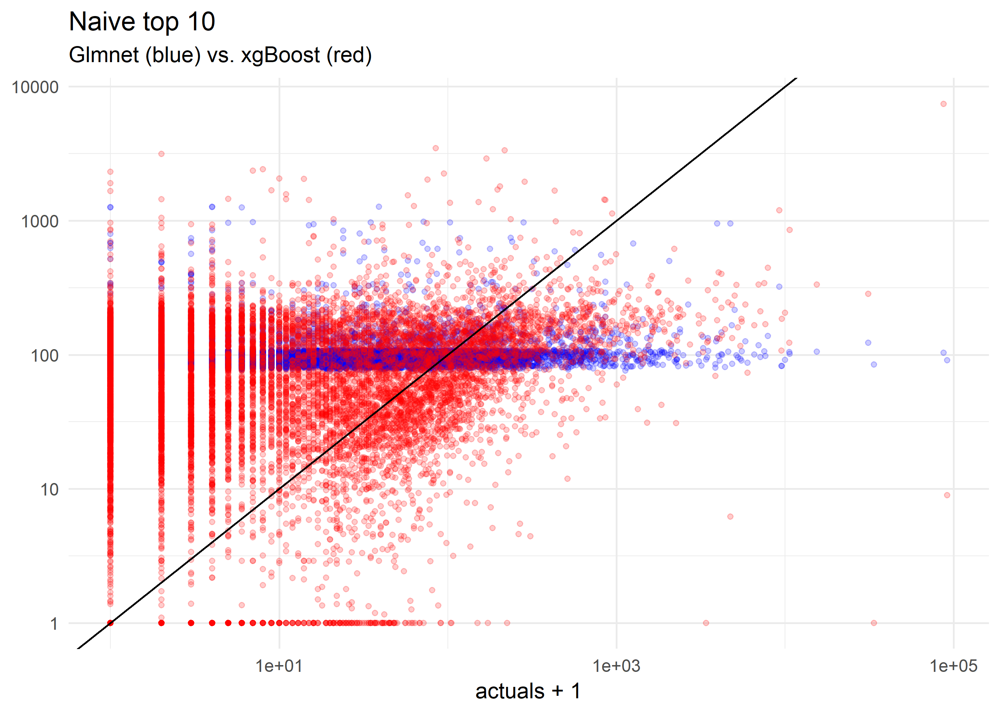
#density plot
prd%>%
gather()%>%
ggplot(aes(value+1,fill=key))+
geom_density(alpha=.5)+
scale_x_log10(labels=scales::comma)+
labs(title='Naive top 10', subtitle='Glmnet (green) vs. xgBoost (blue) vs. Actual (red)')+
theme_minimal()
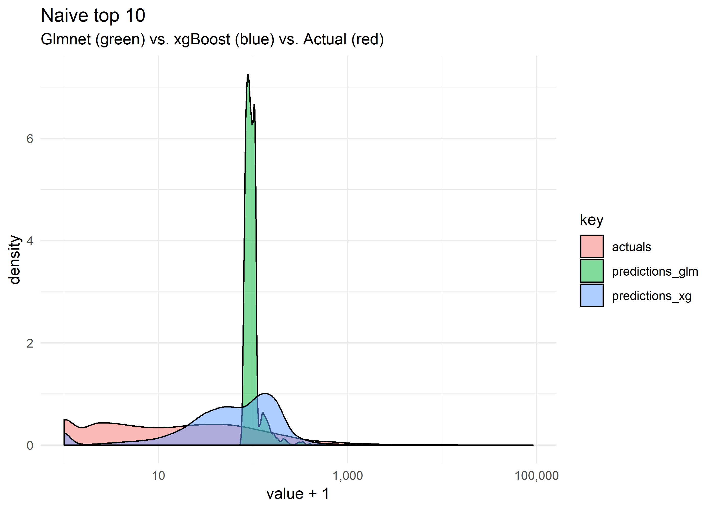
Here we see again limitations in the elastic net. Most predictions are right at the training set mean, with very little variance. However the xgboost predictions do a pretty good job of catching campaigns that have very few backers. This is reflected in the best overall RMSE of 1376.957. Remember that our original xgboost test set RMSE (no special processing) was around 1413, so this represents about a 2.6% reduction in RMSE by using the string clusters.
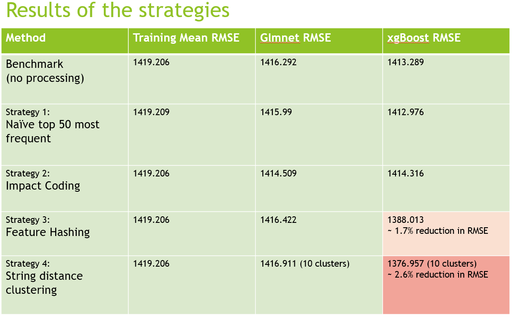
Overall, the performance of both models on these data was less than impressive. In many cases the Glmnet model could barely predict better than simply guessing the training set mean. The xgBoost algorithm performed slightly better, but its performance was also not particularly promising. These results imply that there is simply too much noise in this dataset. To test this hunch, I trained the same models but did not include any of the 500 text features. The results were more or less exactly the same, with or without them. It looks like trying our goal of trying to predict the number of backers using the text features is too difficult a task for our relatively simple approaches. It would be interesting to see how a deep-learning model with feature hashing or string distance clustering would perform.
Though this particular experiment did not show any benefit for a simple ‘top n collapsing’ approach, I have seen small performance boosts when using other datasets. It seems that tree-based methods are more likely to show this benefit as well. Glmnet performance doesn’t seem to change. In other tests I’ve done, the improvement due is not large, but the effort required to do so is also not large. However, one must be careful to make sure that the training/testing sets contain the same levels; otherwise, one may still encounter the issue of novel levels in the testing set.
Impact coding had no discernible effect on the test set RMSE. Nevertheless, this method is still useful because of the way it automatically handles missing values, novel test set levels, and also can help with feature selection (using significance threshold pruning). It would be worth trying this technique out on other datasets to see if there are indeed some performance improvements.
The best performing method used string distance clustering, using just 10 clusters (from a possible 223 unique factor levels). There was about a 3% reduction in RMSE over the control condition. Nevertheless, the performance may be slightly optimistic due to the problem of “nested model bias” explained above. The clusters were in fact formed using observations from the training and test set, so we should not be totally surprised when the performance evaluation on the test set is slightly better than other methods (which did not rely on information from the test set).
Feature hashing is unfortunately not a magic bullet, though it did improve predictions slightly for the tree-based model. This result would seem to corroborate the idea that this particular dataset simply does not contain enough signal. I am still convinced that this method is extremely useful when building models using real-world—and often messy—datasets. Almost every Python submission on Kaggle uses some kind of feature hashing nowadays, so surely there must be some benefit to it. Though we must trade off model interpretability, I think the gains in terms of model training time and the ability to easily model hundreds or thousands of interaction terms, makes feature hashing an essentially skill for any data analyst.
Micci-Barreca, Daniele. “A preprocessing scheme for high-cardinality categorical attributes in classification and prediction problems.” ACM SIGKDD Explorations Newsletter 3.1 (2001): 27-32. ↩
Mount, John, and Nina Zumel. “The vtreat R package: a statistically sound data processor for predictive modeling.” ↩ ↩2 ↩3